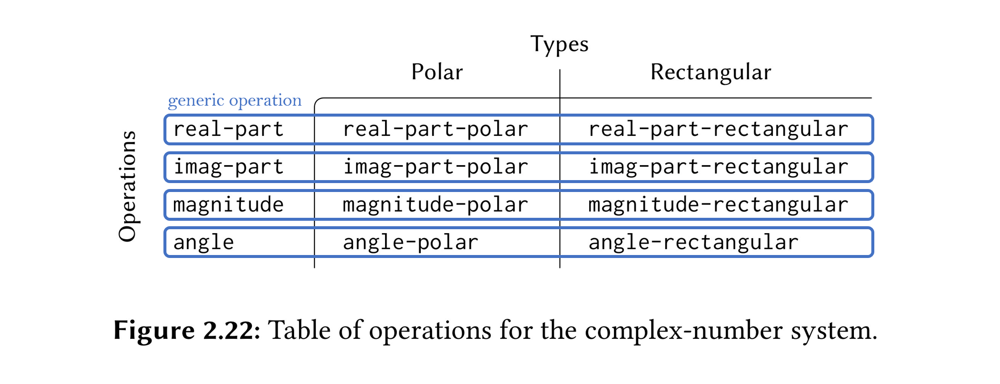
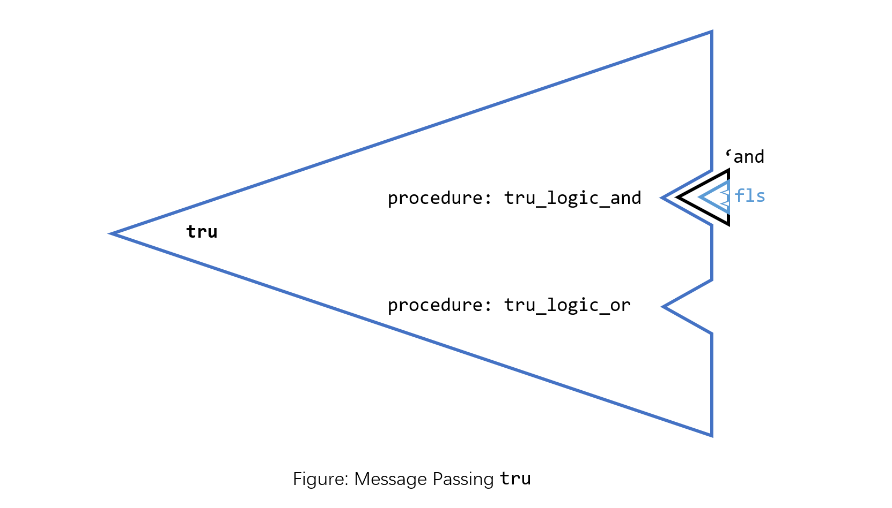

Introduction
SICP § 2.4.3 describes a generic system implemented using table lookup (type × operation two-dimensional table), where concrete functions are hidden under abstractions like “generic function + Selector”. What would it look like if we put concrete functions under “data + Selector” abstractions? This article presents a Boolean implementation that conforms to this abstraction (called Message Passing in SICP). The importance of data and functions in programming is self-evident. Let’s explore three perspectives on the possible relationships between data and functions: Message Passing ↦ letting data carry its own functions; $ in Haskell ↦ transforming data into functions; Algebraic data types in Haskell ↦ constructing data using functions.
Generic Functions: Intelligent Operations
In section 2.4.3, the author builds a generic system. What is generics? It’s a form of abstraction. For several types that share certain characteristics, if we can write a function for one type based on this characteristic, we want to extend this function to other types with the same characteristic. For example: for two Int values, I can calculate their maximum (max Int Int) because Int is Orderable, meaning the Int type provides implementations of comparison functions like > / < / etc. For other orderable types (those that provide comparison function implementations), we want to extend max to these types:
max :: (Ord a) => a -> a -> a
max x y = if x >= y then x else y
We abstract the orderable characteristic into the Ord typeclass, and the max function can work with any member type of typeclass.
When we apply the max function to a specific Ord class type, the compiler helps us find the concrete implementation of >= for that type.
So how to find it? One answer is: table lookup. When I need to execute max (operation) on Float (type), I can find the function (the non-generic concrete implementation of max for Float) corresponding to (Float, max) in the Cartesian product of type × operation.
SICP Page 252: Generics breaks down the type × operation table row by row, with each generic function corresponding to one row. ✨
Data and Functions
Intelligent Operation? WHAT IF Intelligent Data Objects?
In generic functions mentioned in the previous section, data exists as an object to be operated on. Data’s job is to be acted upon by functions. Our generics target functions (operations). In our expectation, we want functions to be “smart”. For example, max :: (Ord a) => a -> a -> a is smart - it can “automatically” transform into the corresponding non-generic concrete implementation max :: Int -> Int -> Int for its specific type. Data just needs to wait to be acted upon.
𝐖𝐡𝐚𝐭 𝐢𝐟: Instead of letting generic functions find concrete implementations for data → let data find concrete implementations for functions? From the perspective of decomposing the type × operation table, what if we break this table into columns, letting certain form of data (corresponding to generic operations, let’s call it generic? data) represent a column?

This was already presented in SICP 2.1.3 when discussing compound data extraction, and was mentioned in my previous blog post. The focus in SICP 2.1.3 was on operations on compound data itself (extracting fields): to ensure consistency before and after list element access, we provide the list as a procedure that accepts parameters and returns corresponding list elements based on those parameters.
Here we care about how data behaves in programs - how data interacts with functions and other data. We want data to carry its own interaction methods rather than being static entities that can only be acted upon by other functions. Based on this idea, let’s try to write a Boolean that follows this behavioral specification.
Boolean Carrying Functions
First, let’s present a similar type × operation two-dimensional table. Since we’re doing simple modeling, we’ll only consider two operations - AND (logic_and) and OR (logic_or):
Similar to generic functions representing rows, we write “data” that can represent columns. The identifiers for TRUE and FALSE columns are tru and fls respectively. How to make data carry functions? One answer is to make the data itself a function that can accept parameters, using parameters to extract the functions carried by the data:
(define tru ; (define tru (lambda ...))
(lambda (op)
(cond ((eq? op 'and) tru_logic_and)
((eq? op 'or) tru_logic_or)
)
)
)
(define fls ; (define fls (lambda ...))
(lambda (op)
(cond ((eq? op 'and) fls_logic_and)
((eq? op 'or) fls_logic_or)
)
)
)
The functions corresponding to lambda - cond (curried logical AND and OR) are implemented as follows:
(define (tru_logic_and x) (if (eq? x tru) tru fls)) ; 1 AND x
(define (tru_logic_or x) tru) ; 1 OR _ = 1
(define (fls_logic_and x) fls) ; 0 AND _ = 0
(define (fls_logic_or x) (if (eq? x tru) tru fls)) ; 0 OR x
Checking tru fls in REPL: unsurprisingly both are compound procedures
1 ]=> tru
;Value: #[compound-procedure 13 tru]
1 ]=> fls
;Value: #[compound-procedure 12 fls]
Let’s do a simple test:
1 ]=> ((tru 'and) fls)
;Value: #[compound-procedure 12 fls]
What did we do here? First, tru is a lambda expression that accepts symbol parameters. (tru 'and) returns tru_logic_and – a curried logical AND (that is, logical AND with TRUE already passed in), then we apply tru_logic_and to fls, and the final return value is the compound procedure fls.
Here’s an illustration:
For longer expressions: if we ignore some parentheses, it looks like infix logical expressions
1 ]=> ((((fls 'or) tru) 'and) fls) ; ((0 or 1) and 0)
;Value: #[compound-procedure 12 fls]
If you prefer prefix calls, we can add a small wrapper:
(define (logic op x y) ((x op) y))
Testing logic:
1 ]=> (logic 'and tru fls)
;Value: #[compound-procedure 12 fls]
1 ]=> (logic 'or (logic 'and fls fls) tru) ; (or (and 0 0) 1)
;Value: #[compound-procedure 13 tru]
→ Message Passing: Another Perspective on Data
This style of building Boolean is called Message Passing: data is an entity that receives operation names (messages). For example: tru can receive messages like 'and / 'or and return corresponding curried functions for our subsequent use. From this perspective, the data itself is as important as the methods carried by the data, which is also a manifestation of “data as program”. You might notice a hint of object-oriented flavor here - objects are essentially “state + methods”, and here data contains “state + functions”, though the state here is immutable.
$ in Haskell
$ is an infix function with the following type signature and precedence. Its purpose is to change expression evaluation order, and one objective result is that using $ reduces the number of parentheses in code:
ghci> :i ($)
($) :: (a -> b) -> a -> b -- Defined in 'GHC.Base'
infixr 0 $
Applying $ (curried) to a value returns a function:
ghci> x = 5 :: Int
ghci> :t ($ x)
($ x) :: (Int -> b) -> b
One way to understand this is: ($ x) transforms x from static data into data waiting to be acted upon by function Int -> b (which is a function from the type signature). Based on this understanding, we can write code like this:
ghci> map ($ 5) [(* 2), (+ 10), (^ 3)]
[10,15,125]
Algebraic Data Types in Haskell
Here’s the classic recursive definition of binary trees using algebraic data types:
data Tree a = Empty | Node a (Tree a) (Tree a)
Empty and Node are value constructors for Tree a. Value constructors are functions that return values of some type. Empty is a nullary constructor, while Node takes three value parameters: a, Tree a, and Tree a.
Tree a is a type constructor. Type constructors are functions that return specific types. Tree a takes one type parameter a and returns the corresponding concrete Tree type. For example, Tree Int and Tree Char are Tree types with node data types of Int and Char respectively.
This shows Haskell’s elegant consistency in language design - there’s no special generic syntax, just functions throughout.